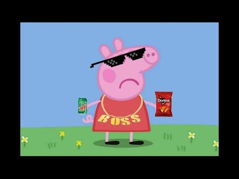

Peppa Pig is a British television show for kids. It's about a pig named Peppa (pretty self explanatory). Peppa has also become a meme across the internet, with edited photos/videos of her getting thousands of views.
This is a photo of the main character of the show, Peppa. Click here to see an article about how some kids are developing slight British accents by watching Peppa Pig.
Here's another photo of Peppa, except she's been edited by someone.
I used to watch Peppa Pig. Despite the meme, I really enjoyed the show :)